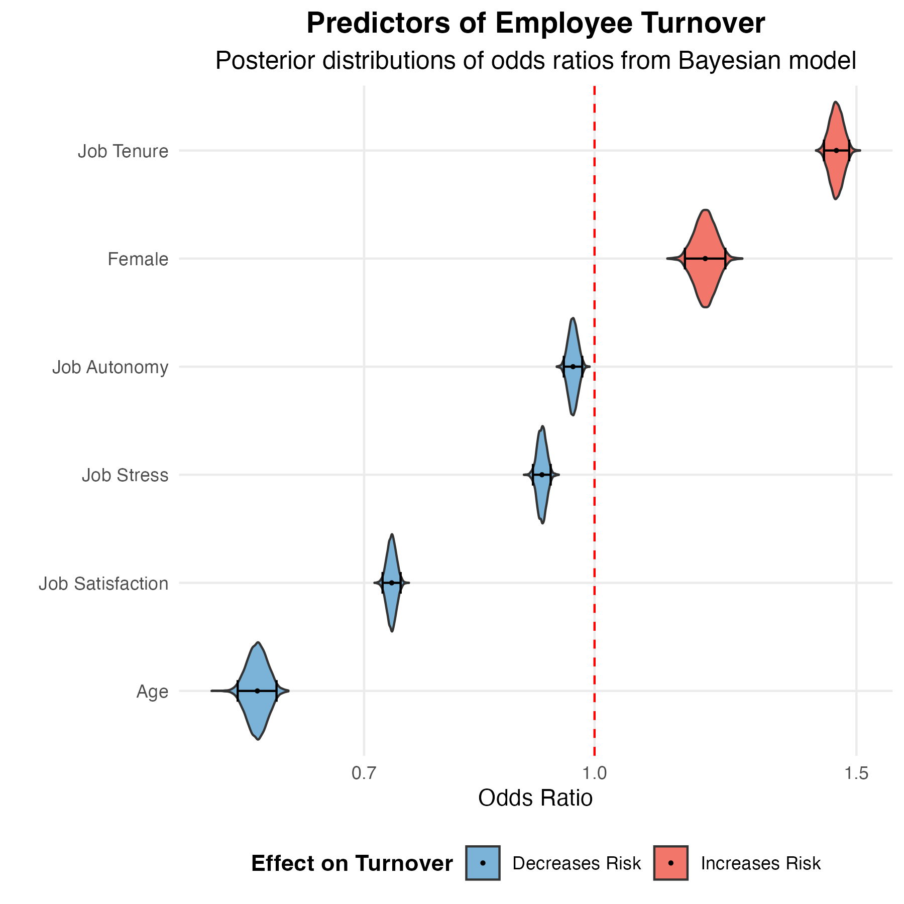

Losing a valued employee is undeniably costly, with PwC Australia estimating an average cost of $40,000 per departing employee. Many organisations grapple with identifying the true drivers of attrition. While numerous factors are often cited, how certain can we be about the expected impact of each one? Understanding not just the 'what' but also the 'how sure are we' is vital for making informed, evidence-based decisions to improve retention.
Understanding Uncertainty in Turnover Risk: What the Data Show
To address the challenge of quantifying uncertainty in turnover risk, we turned to the Household, Income and Labour Dynamics in Australia (HILDA) survey, a long-term study of life in Australia. Our analysis included 21,356 employed participants, whom the survey has followed over time from as early as 2001. We used a Bayesian generalised linear mixed model to predict the odds of an employee leaving their job in the following year as a function of job satisfaction, job tenure, age, gender, job autonomy, and job stress. The Bayesian approach offers an advantage over traditional methods. Instead of providing just a single 'best estimate' for each factor's influence, Bayesian analysis directly quantifies the uncertainty around that estimate, giving us a credible range of plausible values. This offers a more complete understanding of the potential impact of each predictor.
The graph below displays the odds ratios for each factor, illustrating their impact on the likelihood of turnover. An odds ratio greater than 1.0 (the vertical dashed red line) indicates an increased probability of leaving, while a value less than 1.0 suggests a decreased probability. Each violin shape represents the posterior distribution — the range of plausible values for each odds ratio. The posterior distribution directly reflects our confidence or uncertainty in the estimate. Narrower violins signify greater certainty. Factors depicted in red are associated with higher turnover, while those in blue are linked to lower turnover.

Our analysis reveals the impacts of several key predictors. Job satisfaction was negatively associated with turnover. We can summarize the posterior distribution using what's called a 95% credible interval, which identifies the 2.5th and 97.5th quantiles of the posterior distribution, highlighting where the range of odds ratios that are most plausible. The 95% credible interval on the job satisfaction odds ratio spans from 0.72 to 0.74. For each standard deviation increase in job satisfaction, the odds of an employee leaving decrease by between 25.9% and 28.1%. This highlights that employees who genuinely enjoy their work are far less likely to seek opportunities elsewhere. This aligns with extensive research highlighting job satisfaction's critical role.
Age was negatively related to turnover. On average, older employees were less likely to leave the organisation. The odds of turnover decreased by between 38.7% and 42.3% for each standard deviation increase in age. Conversely, longer job tenure was associated with an increased likelihood of leaving. The odds of turnover increased by between 43.3% and 47.7% for each standard deviation increase in tenure. This interplay between age and tenure produces an interesting dynamic. The strong negative relationship between age and turnover suggests that, all else being equal, older employees bring greater stability; for instance, a 50-year-old with five years of tenure is less likely to leave than a 30-year-old with similar tenure, likely due to life-stage factors. However, the positive relationship between job tenure and turnover tells us that once age is accounted for, extended time in the same specific job can independently increase departure odds. Thus, a 40-year-old with 15 years in their role might be more inclined to leave than a 40-year-old with only 3 years' tenure, perhaps seeking new challenges or feeling they've plateaued in that particular position. The model helps us distinguish the general stability associated with age from the specific job-related experiences that evolve with long tenure.
The person's sex also predicted higher turnover, with odds of leaving being between 15.0% and 22.1% higher for females compared to males. This highlights the need for further investigation into underlying workplace dynamics and societal factors influencing career paths, as discussed in research on the gender wage gap.
The impacts of job autonomy and job stress were more modest, but still statistically reliable. Greater job autonomy was linked to slightly lower odds of turnover, with a decrease of between 2.0% and 4.9% for each standard deviation increase in autonomy. Perhaps most surprisingly, higher reported job stress was associated with slightly lower odds of turnover, with a decrease of between 6.8% and 9.5% for each standard deviation increase in job stress. This counterintuitive finding might reflect individuals in demanding but highly engaging or rewarding "challenge stress" roles. Or perhaps it's a selection effect: those who remain in high-stress jobs have developed effective coping mechanisms or a strong commitment that outweighs the desire to leave due to stress alone. It highlights that not all stress is necessarily "bad" in terms of retention, but that its effects are complex.
From Probabilities to Policies
The ability of Bayesian analysis to quantify uncertainty helps organisations prioritise interventions. Factors that are relatively certain to have strong effects, like job satisfaction, demand immediate and sustained attention. The reduction in turnover odds associated with higher satisfaction means that investments in creating a positive work environment, ensuring meaningful work, providing recognition, and fostering supportive relationships are likely to yield significant returns.
The clear, if somewhat surprising, link between longer tenure and higher turnover risk suggests a need for proactive engagement strategies for experienced staff. This highlights the importance of implementing robust career development planning and offering opportunities for growth or internal mobility to prevent stagnation.
While age itself is not a manageable factor, the strong evidence that older workers are less likely to leave highlights their value as a stable segment of the workforce. Creating an inclusive environment that supports older workers is therefore also important. The finding that female employees have a higher turnover risk highlights the need to consider internal practices related to equity, development, and support for work-life integration. See also this earlier blog post on the impact of parenthood on gender pay disparities.